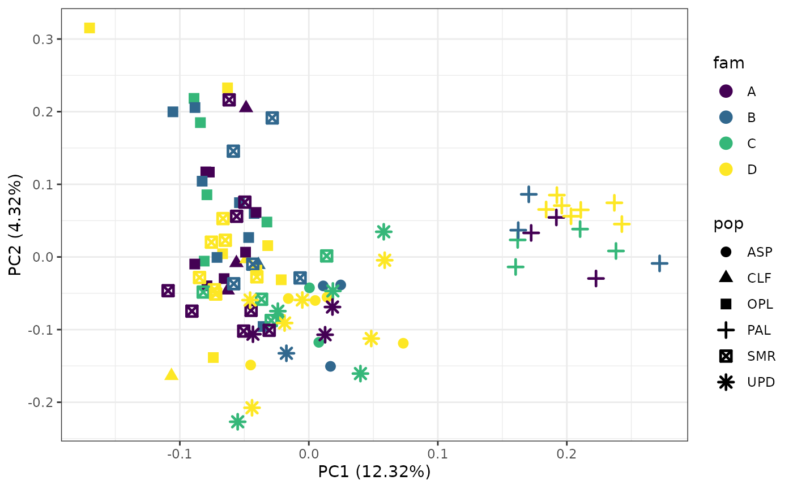
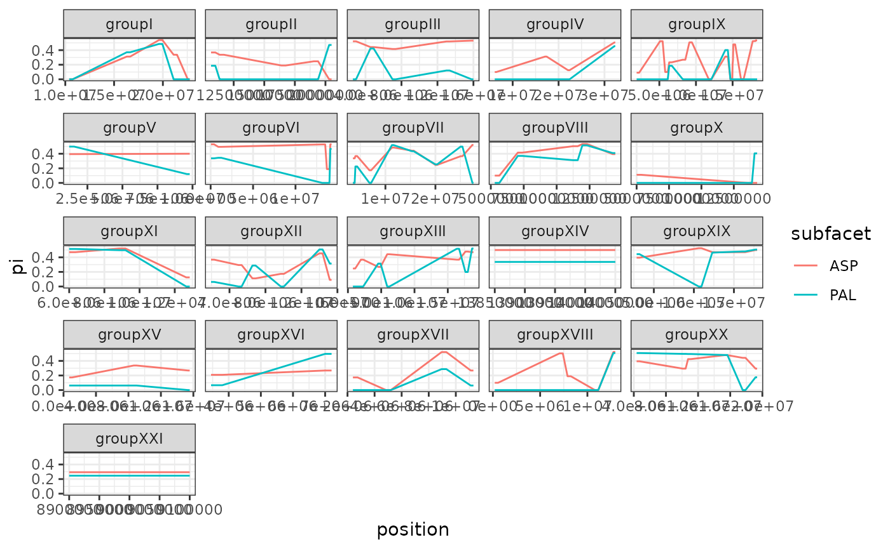
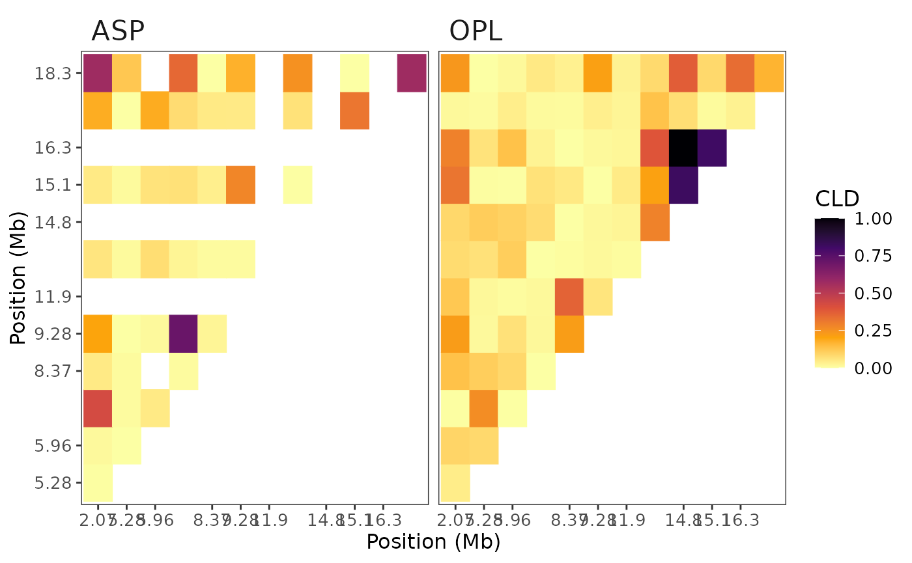
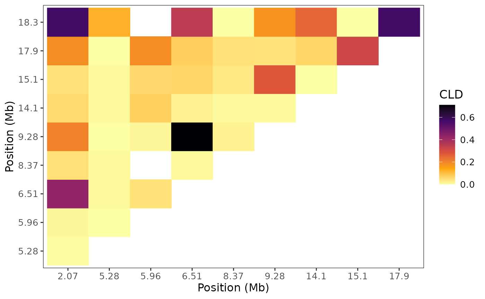

Introduction to Basic SNP Analysis with snpR
William Hemstrom
June 27, 2021
snpR_introduction.RmdsnpR Introduction
snpR is a SNP genomic analysis package that is designed to do a range of basic genomic analyses, such as calculate observed and expected heterozygosity, linkage disequilibrium, pairwise-Fst, and so on. This package also has dimensionality reduction tools (eg. PCA, tsne, umap), data formatting conversions for other packages and programs, population structure, genetic prediction, private allele detection and more (See documentation for details). All functions are written to take similar arguments and interpret them in consistent ways. This is done through the use of the snpRdata object class, which all snpR functions take as their first argument. Nearly all functions are written to be overwrite safe: the object provided to the function should be overwritten by the output. Newly calculated statistics will simply be merged-in to the existing object.
A fundamental feature of snpR is the use of facets. Facets define categorical metadata features of the data, and can reference either features describing individual SNPs (such as chromosome) or individual samples (such as population). Facets are used to automatically break apart input data to calculate statistics in intuitive ways, such as by calculating observed heterozygosity in each population. Since metadata is contained in the snpRdata object, the user will never need to manually subset or loop calculations across categories/levels of a facet. Further, facets can be combined so that many calculations occur across these groups with just one command. Facets are combined using “.” argument (Examples are provided below). Further information on facets is provided later in this guide.
Quick-start Guide
Here, we will walk through a basic analysis of the example three-spined stickleback data included in this package (stickSNPs). We will filter SNP data, make a PCA exploratory plot, use a clustering algorithm (tSNE), calculate minor allele frequencies, , observed heterozygosity, see if SNPs are in HWE, check for private alleles, calculate pairwise FST, gaussian smooth and plot these parameters, calculate pairwise LD in two populations on one chromosome, and run through a Genome Wide Association example.
Data import
snpR can take a variety of SNP data formats. The basic input format is a tab-delimited SNP dataset, where each row contains metadata and genotypes for a single SNP. Genotypes are noted with two characters, such as “GG” or “GA” for a G/G homozygote and a G/A heterozygote, respectively. The missing data format can be user-defined, but is “NN” by default. For example, see the stick_NN_input.txt distributed with this package.
NNfile <- system.file("extdata", "stick_NN_input.txt", package = "snpR")Note that this is identical to the format output by, for example, the ANGSD software package. Ensure that genotypes are not stored as factors during import. The resulting data looks like:
## chr position ASP.r2.141 ASP.r2.144 ASP.r2.146 ASP.r2.147
## 1 groupI 10593829 GG GG GG GG
## 2 groupI 16498302 TT TT CT TT
## 3 groupI 19759331 AA NN GG NN
## 4 groupI 21284266 GG GG GG NN
## 5 groupI 22746027 GG GG GG GG
## 6 groupII 10829169 CC CC CC CGNote that snpR can also import data where genotypes are stored as four numbers (ex. “GG”, “GA”, and “NN” as “0101”, “0102”, and “0000”, respectively), and as a single numeric character that represents the count of the minor allele (0 or 2 for homozygotes, 1 for heterozygotes).
Data in the “NN” format, as shown above, can be imported directly into a snpRdata set alongside any corresponding metadata using import.snpR.data function:
# the first three characters of the column names are the population, so let's grab that.
# since the first three columns contain snp.metadata, we need to remove those before import!
sample_meta <- data.frame(pop = substr(colnames(NN[-c(1:2)]), 1, 3), stringsAsFactors = F)
# grab our sample metadata
snp_meta <- NN[,1:2]
# grab the genetic data
gen_data <- NN[,3:ncol(NN)]
# import, remember to remove metadata from the genotypes!
my.dat <- import.snpR.data(genotypes = gen_data,
snp.meta = snp_meta,
sample.meta = sample_meta)Note:
Column names in the snp and sample metadata must be unique (no repeats across both metadata sets), and cannot contain ‘.’, ‘~’, or whitespace!
Some functions expect to see columns named ‘chr’ and ‘position’. Ensuring snp.meta has these columns early on saves some potential column renaming later.
Shared metadata levels across different columns can cause issues if statistics are calculated for both of the two categories (for example, if both a population and a family are both named “A”).
If you have existing objects in the adegenet genind or genlight format, the vcfR format, or a vcf file, plink files, FSTAT file, or genepop file, these can also be automatically imported! Look for the “read_vcf()” or “convert_genind()” style functions.
Most delimited genotype formats (such as NN or 0000) can also be automatically imported with the read_delimited_snps() function.
my.dat2 <- read_delimited_snps(NNfile, sample.meta = sample_meta, header_cols = 2)
identical(my.dat, my.dat2)## [1] TRUEsnpRdata objects and facets
snpRdata objects
snpRdata objects store a range of variables internally in order to minimize repeat computation of things like allele frequencies.
Calling a snpRdata object will show a summary of the calculations done on the object and the metadata categories available.
my.datBy and large, snpRdata objects should be accessed via accessor functions:
# get the number of samples
nsamps(my.dat)## [1] 100
ncol(my.dat)## [1] 100
# get the number of SNPs
nsnps(my.dat)## [1] 100
nrow(my.dat)## [1] 100
# dim also works
dim(my.dat)## [1] 100 100
# view sample metadata
head(sample.meta(my.dat))## pop .sample.id
## 1 ASP 1
## 2 ASP 2
## 3 ASP 3
## 4 ASP 4
## 5 ASP 5
## 6 ASP 6
# write to sample metadata; note that writing to any part of the metadata or genotypes will cause any calculations
# to be discarded, since the new columns can cause some unexpected results.
sample.meta(my.dat)$fam <- sample(LETTERS[1:4], nsamps(my.dat), T)
# view snp metadata
head(snp.meta(my.dat))## chr position .snp.id
## 1 groupVI 212436 1
## 2 groupXVIII 350070 2
## 3 groupXV 854285 3
## 4 groupXIII 907279 4
## 5 groupVI 1068620 5
## 6 groupV 1392753 6
# write to sample metadata; note that writing to any part of the metadata or genotypes will cause any calculations
# to be discarded, since the new columns can cause some unexpected results.
snp.meta(my.dat)$new_snp_col <- sample(LETTERS[1:6], nsnps(my.dat), T)## Warning in validityMethod(object): Some levels are duplicated across multiple sample meta facets.
## This will cause issues if those sample facets are run during analysis.
## Issues:
##
## Level: A in facets: fam, new_snp_col
## Level: B in facets: fam, new_snp_col
## Level: C in facets: fam, new_snp_col
## Level: D in facets: fam, new_snp_col
snp.meta(my.dat)$new_snp_col <- NULL
# view genotypes, can be written to as above
genotypes(my.dat)[1:6, 1:6]## ASP.r2.141 ASP.r2.144 ASP.r2.146 ASP.r2.147 ASP.r2.196 ASP.r2.216
## 1 AG GG AA AA NN AG
## 2 GG GG GG GG GT GG
## 3 CC CC CC CC CC CC
## 4 AA AA AA AA AG AA
## 5 GG NN NN AA GG AG
## 6 AC AC AA AA AA ACsnpRdata objects can be subset using the usual bracket operators, specifying first the snps to keep, then the samples to keep:
sub1 <- my.dat[1:10,]
nsnps(sub1)## [1] 10
sub2 <- my.dat[,1:10]
nsamps(sub2)## [1] 10Almost all snpR functions are built to allow overwriting for easy object management. Since calculated data is stored in snpRdata objects, snpR functions generally return the snpRdata object that was given to them, but with extra data merged in. For example, to calculate observed heterozygosity, the calc_ho function can be used:
# calculate observed heterozygosity, overwriting the my.dat object
my.dat <- calc_ho(my.dat)Calculated statistics can be fetched using the get.snpR.stats accessor function. Note that this function returns a data.frame or nested list (depending on the requested stats), not a snpRdata object, and should never be used to overwrite a snpRdata object!. Since some calculations are run pairwise you need to specify if you want the pairwise or single stats returned.
get.snpR.stats will automatically return multiple types of data if it is available. Typically, this is the statistic calculated both within each individual snp and the weighted averages within populations (or facet levels).
# fetch calculated statistics
ho <- get.snpR.stats(my.dat, stats = "ho")
head(ho$single)## facet subfacet chr position .snp.id ho
## 1 .base .base groupVI 212436 1 0.47674419
## 2 .base .base groupXVIII 350070 2 0.06451613
## 3 .base .base groupXV 854285 3 0.13541667
## 4 .base .base groupXIII 907279 4 0.44318182
## 5 .base .base groupVI 1068620 5 0.38983051
## 6 .base .base groupV 1392753 6 0.35483871
head(ho$weighted.means)## facet subfacet snp.facet snp.subfacet weighted_mean_ho
## 1 .base .base .base .base 0.3171868Facets
Facets are a fundamental feature of snpR. Often, SNP data must be separated by population/chromosome/family/year etc. before statistics are calculated. Additionally, many statistics, like Fst, need to be calculated pairwise by comparing each population to every other population. Facets allow you to easily do this without the need for direct data manipulation.
Basic Facets
Facets are defined by reference to column names in either the snp or sample metadata that was provided when creating a snpRdata object. For example, the facet “pop” would split my.dat apart by the pop column in the sample metadata and run the requested function or calculation for each of the levels/subfacets within that facet (eg. the facet pop comprises 6 levels/subfacets - ASP, CLF, OPL, PAL, SMR, UPD). Whereas the facet “chr” would split my.dat apart by the “chr” column in the snp metadata (21 levels/subfacets) and run any specified calculation for each unique level/subfacet.
To calculate observed heterozygosity at each SNP within each population, for example, one can supply the “pop” facet.
my.dat <- calc_ho(my.dat, facets = "pop") #running the calculation
head(get.snpR.stats(my.dat, facets = "pop", stats = "ho")$weighted.means) #retrieving the results## facet subfacet snp.facet snp.subfacet weighted_mean_ho
## 1 pop ASP .base .base 0.3419156
## 2 pop CLF .base .base 0.2970480
## 3 pop OPL .base .base 0.3446866
## 4 pop PAL .base .base 0.2136752
## 5 pop SMR .base .base 0.3265910
## 6 pop UPD .base .base 0.3660377Complex Facets
Facets can define more than one column at once, in which case the data is split by both columns! Within a single facet, column names are separated by a ‘.’. For example, if there was both a pop and fam (or family) column in the sample metadata, the facet “pop.fam” would split by both the pop and the fam columns simultaneously, so it would have categories like “popA.famB” for an individual from population A, family B. These “complex” facets can also note both SNP and sample-specific categories simultaneously, for example, “pop.chr” would split the data by the pop column in the sample metadata and the chr column in the SNP metadata simultaneously.
my.dat <- calc_ho(my.dat, "pop.fam") #running the calculation
head(get.snpR.stats(my.dat, "pop.fam", stats = "ho")$weighted.means) #retrieving the results## facet subfacet snp.facet snp.subfacet weighted_mean_ho
## 1 fam.pop A.CLF .base .base 0.3111111
## 2 fam.pop A.OPL .base .base 0.3387387
## 3 fam.pop A.PAL .base .base 0.2095588
## 4 fam.pop A.SMR .base .base 0.3353293
## 5 fam.pop A.UPD .base .base 0.4038462
## 6 fam.pop B.ASP .base .base 0.3609023The order of the categories given in a facet do not matter–“pop.chr” will produce the same result as “chr.pop”.
Multiple facets
Most functions can also take several facets at once, given as a character vector. For example, to split by both population, then by population and chr simultaneously, c(“pop”, “pop.chr”) could be given.
my.dat <- calc_ho(my.dat, c("pop.fam", "pop"))
head(get.snpR.stats(my.dat, c("pop.fam", "pop"), stats = "ho")$weighted.means) # will show both facets, but it's a pretty large dataset.## facet subfacet snp.facet snp.subfacet weighted_mean_ho
## 1 fam.pop A.CLF .base .base 0.3111111
## 2 fam.pop A.OPL .base .base 0.3387387
## 3 fam.pop A.PAL .base .base 0.2095588
## 4 fam.pop A.SMR .base .base 0.3353293
## 5 fam.pop A.UPD .base .base 0.4038462
## 6 fam.pop B.ASP .base .base 0.3609023
tail(get.snpR.stats(my.dat, c("pop.fam", "pop"), stats = "ho")$weighted.means) # both facets are contained in the dataset.## facet subfacet snp.facet snp.subfacet weighted_mean_ho
## 23 pop ASP .base .base 0.3419156
## 24 pop CLF .base .base 0.2970480
## 25 pop OPL .base .base 0.3446866
## 26 pop PAL .base .base 0.2136752
## 27 pop SMR .base .base 0.3265910
## 28 pop UPD .base .base 0.3660377A handful of functions only work with either SNP or sample specific facets, but this is fixed “under the hood.” For example, since observed heterozygosity is calculated independently for each SNP, it makes no sense to calculate it split up by chromosome. Using the “pop.chr” facet with calc_ho, therefore, will internally default to “pop”.
However, weighted means are still calculated for each possible category!
# same as just doing "pop" as a facet.
my.dat <- calc_ho(my.dat, "pop.chr")
head(get.snpR.stats(my.dat, "pop.chr", stats = "ho")$weighted.means)## facet subfacet snp.facet snp.subfacet weighted_mean_ho
## 1 pop ASP chr groupI 0.2200000
## 2 pop ASP chr groupII 0.2400000
## 3 pop ASP chr groupIII 0.5000000
## 4 pop ASP chr groupIV 0.2564103
## 5 pop ASP chr groupIX 0.3076923
## 6 pop ASP chr groupV 0.5000000
head(get.snpR.stats(my.dat, "pop.chr", stats = "ho")$single)## facet subfacet chr position .snp.id ho
## 1 pop ASP groupVI 212436 1 0.3333333
## 2 pop CLF groupVI 212436 1 0.6000000
## 3 pop OPL groupVI 212436 1 0.6500000
## 4 pop PAL groupVI 212436 1 0.2941176
## 5 pop SMR groupVI 212436 1 0.4545455
## 6 pop UPD groupVI 212436 1 0.5384615Most of the time, giving NULL (the usual default) to a facets argument will run the data without splitting it up at all. Resulting stats will belong to the “.base” facet, a special, internally used facet that implies no splitting! Giving “all” to a facets argument, on the other hand, will run the data splitting by all previously run facets!
# same as just doing "pop" as a facet.
my.dat <- calc_ho(my.dat)
head(get.snpR.stats(my.dat, ".base", stats = "ho")$weighted.mean)## facet subfacet snp.facet snp.subfacet weighted_mean_ho
## 1 .base .base .base .base 0.3171868Facet subsetting
snpR objects can also be subset using facets by supplying the facet name and the levels to keep or remove:
sub3 <- my.dat[pop = "ASP"]
head(sample.meta(sub3))## pop fam .sample.id
## 1 ASP D 1
## 2 ASP D 2
## 3 ASP D 3
## 4 ASP C 4
## 5 ASP D 5
## 6 ASP B 6Complex facets are specified the same way. Note that the order of the levels and facets must be consistent:
sub4 <- my.dat[pop.fam = "ASP.D"]
head(sample.meta(sub4))## pop fam .sample.id
## 1 ASP D 1
## 2 ASP D 2
## 3 ASP D 3
## 5 ASP D 5
## 8 ASP D 8
# sub5 <- my.dat[pop.fam = "D.ASP"] # won't workYou can filter by multiple facets and facet levels at once:
## [1] 13 28You can also use negative sub-setting:
sub6 <- my.dat[pop = -c("ASP", "PAL")]
unique(sample.meta(sub6)$pop)## [1] "CLF" "OPL" "SMR" "UPD"SNP filtering
The filter_snps function can be used to filter poorly sequenced individuals and loci, remove SNPs with a low minor allele frequency either overall or by facet (often population), remove highly heterozygous SNPs (which are likely sourced from duplicated genomic regions), and remove non-biallelic SNPs.
Here, we will filter out all loci with a minor allele frequency below 0.05 in all populations, loci with a heterozygote frequency above 0.55, that are not bi-allelic, that are non-polymorphic, or that are sequenced in less than half of the individuals. We will also remove all individuals that are genotyped at less than half of the remaining loci, then quickly re-check that all loci are still polymorphic.
my.dat <- filter_snps(x = my.dat,
maf = 0.05, # what is the minimum minor allele frequency to keep?
hf_hets = 0.55, # what is the maximum heterozygote frequency to keep?
min_ind = 0.5, # remove all loci sequenced at less than half of the individuals.
min_loci = 0.5, # remove all individuals sequenced at less than half of the loci
re_run = "partial", # tell filter_snps to recheck that all loci are polymorphic after removing individuals. Could set to "full" to re-check maf and heterozygote frequency, or FALSE to skip.
maf_facets = "pop", # we want to keep any SNPs that pass the maf filter in ANY population!
non_poly = TRUE, # we want to remove non-polymorphic loci
bi_al = TRUE) # we want to remove non bi-allelic loci") # missing genotypes are listed as "NN"Note that we use the facet notation defined above to define maf.facets.
PCA plots
A common first analytical step for new data is to run a PCA to look for any evidence of population structure/sequencing errors. snpR has a function to do this in a streamlined way.
Note:
- A PCA cannot be constructed with missing data, so we interpolate with the average number of each allele across all individuals as the default (“bernoulli”). There are other interpolation methods available in this package (see plot_clusters documentation for more details). *The PCA plotting function can work with a column of population IDs (as well as one additional info column, such as sex). The stickSNPs dataset has an additional sample metadata column called “fam”, which relates to family, so we’ll use that. If you recall, “fam” was created earlier for my.dat in the snpRdata objects section.
head(sample.meta(my.dat))## pop fam .sample.id
## 1 ASP D 1
## 2 ASP D 2
## 3 ASP D 3
## 4 ASP C 4
## 5 ASP D 5
## 6 ASP B 6To run a PCA we can use the plot_clusters function. Note that this function, like all other snpR plotting functions, does not return a snpRdata object and we should not overwrite our data! so, save it to a new variable.
# generate both tSNE and PCA plots
p <- plot_clusters(my.dat, facets = c("pop.fam"))To view the plots, we can call the object under the “plots” element in the list that plot_clusters returned.
# View the PCA
p$plots$pca
plot_clusters also returns the raw plot data under the data element.
plot_clusters also supports a few other plotting tools (UMAP and tSNE), but these are not currently recommended due to reproducibility issues.
Tip: you can specify viridis palette option for your plot! Or, if you want more customization, save the data to a new object and use your preferred plotting library package. For example:
a <- p$data$pca
ggplot2::ggplot(a, aes(PC1, PC2, color=pop)) + geom_point() # a simple exampleCalculate minor allele frequencies, , Ho, check for private alleles and HWE.
Minor allele frequencies, , Ho, the number of private alleles, and HWE divergence, and other basic diversity statistics are easy to calculate with snpR. Each use a very similar function, which takes identical arguments. Since each returns a copy of the input snpRdata object, but with new information merged in, we can safely overwrite the original object each time we use these functions.
Each of these functions, like most functions, take a snpRdata object and facets as their first two arguments. Here, we’ll use the my.dat object and calculate various statistics splitting the dataset by pop.
# calculate minor allele frequencies, pi, ho, check for private alleles and HWE.
my.dat <- calc_maf(my.dat, "pop")
my.dat <- calc_pi(my.dat, "pop")
my.dat <- calc_ho(my.dat, "pop")
my.dat <- calc_private(my.dat, "pop")
my.dat <- calc_hwe(my.dat, "pop")We can then use get.snpR.stats to view the results!
# using the "all" facet requests statistics for all facets that have been run.
stats <- get.snpR.stats(my.dat, "pop", stats = c("maf", "pi", "ho", "private", "hwe"))
head(stats$single)[,6:10]## maf maj.count major min.count minor
## 1 0.5000000 9 G 9 A
## 2 0.7000000 3 G 7 A
## 3 0.5750000 17 G 23 A
## 4 0.2058823 27 G 7 A
## 5 0.5909091 18 G 26 A
## 6 0.5000000 13 G 13 APairwise Fst calculation
snpR can calculate pairwise Fst using a few approaches. Here, we’ll use Wier and Cockerham (1984)’s method to calculate pairwise Fst between each pair of populations for each SNP.
my.dat <- calc_pairwise_fst(my.dat, "pop", method = "WC")To recover the data, we again use get.snpR.stats. We get a new kind of output here: fst.matrix, which will show a matrix of fst scores across comparisons!
stats <- get.snpR.stats(my.dat, "pop", stats ="fst")
head(stats$fst.matrix$pop)## Key: <p1>
## p1 CLF OPL PAL SMR UPD
## <fctr> <num> <num> <num> <num> <num>
## 1: ASP 0.030338 0.04646719 0.1712883 0.03648554 -0.006983092
## 2: CLF NA 0.03896661 0.2846742 0.03729842 0.033546407
## 3: OPL NA NA 0.2414295 0.01030270 0.040228728
## 4: PAL NA NA NA 0.23150253 0.168629980
## 5: SMR NA NA NA NA 0.030431574Gaussian Smoothing
snpR has a tool to make sliding window averages for parameters using a Gaussian kernel, splitting by any number of different variables. Here, we’ll smooth , Ho, and pairwise Fst, splitting by population. In addition, we’ll weight the contribution of each SNP to each window by the number of times that SNP was sequenced across individuals.
To calculate sliding window averages, we need to define the sizes of the windows and the distance we slide between each. These are defined by the “sigma” and “step” arguments, respectively. Each window will include all SNPs within 3 x sigma of the window center, after which their contribution to the window average is small enough to be negligible. Both sigma and step are defined in kilobases.
Note that snpR looks for a column titled “position” in the SNP metadata when smoothing. This column should contain the position of each SNP in bp on the scaffold/chromosome/etc.
By default, snpR will calculate sliding window averages for all previously calculated stats. The “stats.type” argument can be used to limit this to just single (, Ho, etc) or pairwise stats (Fst). Note that individual stats cannot be specified, since the computational gain in running only one or two stats is minimal, so only the “pairwise”, “single” or c(“pairwise”, “single”) stats.type options are allowed.
If you have many different facet combinations and a large dataset, this may take a while, so we’ll run it only for one population.
sub7 <- my.dat[pop = c("ASP", "PAL")]
sub7 <- calc_pi(sub7, "pop")
sub7 <- calc_pairwise_fst(sub7, "pop")
sub7 <- calc_smoothed_averages(x = sub7, facets = "pop.chr",
sigma = 200, # using a window size of 200
step = 50) # using a step size of 50 between windowsWe could run calc_smoothed_averages() faster using the
par argument if we chose to!
We can view the results with get.snpR.stats as usual! We can then
look at the single.window and pairwise.window
outputs to see our results.
stats <- get.snpR.stats(sub7, facets = "pop.chr", stats = c("pi", "fst"))
head(stats$single.window)## facet subfacet snp.facet snp.subfacet position sigma step nk.status gaussian
## 1 pop ASP chr groupVI 50000 200 50 TRUE TRUE
## 2 pop PAL chr groupVI 50000 200 50 TRUE TRUE
## 3 pop ASP chr groupVI 100000 200 50 TRUE TRUE
## 4 pop PAL chr groupVI 100000 200 50 TRUE TRUE
## 5 pop ASP chr groupVI 150000 200 50 TRUE TRUE
## 6 pop PAL chr groupVI 150000 200 50 TRUE TRUE
## n_snps triple_sigma pi
## 1 1 FALSE 0.5294118
## 2 1 FALSE 0.3368984
## 3 1 FALSE 0.5294118
## 4 1 FALSE 0.3368984
## 5 1 FALSE 0.5294118
## 6 1 FALSE 0.3368984
head(stats$pairwise.window)## facet subfacet snp.facet snp.subfacet position sigma step nk.status gaussian
## 1 pop ASP~PAL chr groupVI 50000 200 50 TRUE TRUE
## 2 pop ASP~PAL chr groupVI 100000 200 50 TRUE TRUE
## 3 pop ASP~PAL chr groupVI 150000 200 50 TRUE TRUE
## 4 pop ASP~PAL chr groupVI 200000 200 50 TRUE TRUE
## 5 pop ASP~PAL chr groupXVIII 200000 200 50 TRUE TRUE
## 6 pop ASP~PAL chr groupVI 250000 200 50 TRUE TRUE
## n_snps triple_sigma fst
## 1 1 FALSE 0.13801803
## 2 1 FALSE 0.13801803
## 3 1 FALSE 0.13801803
## 4 1 FALSE 0.13801803
## 5 1 FALSE 0.02848134
## 6 1 FALSE 0.13801803Plot the Smoothed Parameters
Next, we want to plot these variables. We’ll use the ggplot2 package, and start with :
stats <- get.snpR.stats(x = sub7, facets = "pop.chr", stats = "pi")$single.window
# Plot pi, pi works the same way!
ggplot(stats, aes(x = position, y = pi, color = subfacet)) + geom_line() + theme_bw() +
facet_wrap(~snp.subfacet, scales = "free_x") # facet wrap on chr to split by linkage chr/chromosome.
Calculate Pairwise LD
Now, we’ll calculate pairwise LD for one population. We’ll use Burrow’s Composite Linkage Disequilibrium as our measure of LD, since it runs quickly. Several other options are also available (for more details see the documentation). We can specify that we want to split by linkage groups/chromosomes, as usual. This will produce two outputs: a proximity table and a matrix of pairwise LD for each level for each statistic.
Since LD comparisons take a while, it can be worthwhile to run only a few different categories of a given facet. The snpR LD function can do this with the “subfacet” argument. This argument takes a named list, where each entry contains the categories to run for a specific facet. For example:
list(pop = "ASP", chr = "groupIX") #would run the ASP population for the groupIX chromosome, whereas
## $pop
## [1] "SMR" "OPL"
##
## $chr
## [1] "groupIX" "groupIV"would run the SMR and OPL populations for the group IX and IV chromosomes. We can use complex (multi-category) facets as normal, so
list(fam.pop = "A.ASP")## $fam.pop
## [1] "A.ASP"would run only samples in family A and the ASP population.
In this case, let’s run the ASP and OPL populations for groupIX:
my.dat <- calc_pairwise_ld(my.dat, facets = "chr.pop",
subfacets = list(pop = c("ASP", "OPL"), chr = "groupIX"))The results can be accessed as usual, although they are in a slightly different format!
stats <- get.snpR.stats(x = my.dat, facets = "chr.pop", stats = "ld")
str(stats)## List of 1
## $ LD:List of 2
## ..$ prox :Classes 'data.table' and 'data.frame': 121 obs. of 11 variables:
## .. ..$ s1_chr : chr [1:121] "groupIX" "groupIX" "groupIX" "groupIX" ...
## .. ..$ s1_position : num [1:121] 2075079 2075079 5287711 2075079 5287711 ...
## .. ..$ s1_.snp.id : int [1:121] 7 7 22 7 22 24 7 22 28 7 ...
## .. ..$ s2_chr : chr [1:121] "groupIX" "groupIX" "groupIX" "groupIX" ...
## .. ..$ s2_position : num [1:121] 5287711 5960933 5960933 6515796 6515796 ...
## .. ..$ s2_.snp.id : int [1:121] 22 24 24 28 28 28 36 36 36 41 ...
## .. ..$ proximity : num [1:121] 3212632 3885854 673222 4440717 1228085 ...
## .. ..$ CLD : num [1:121] 0.00284 0.01235 0 0.42857 0.00833 ...
## .. ..$ sample.facet : chr [1:121] "pop" "pop" "pop" "pop" ...
## .. ..$ sample.subfacet: chr [1:121] "ASP" "ASP" "ASP" "ASP" ...
## .. ..$ S : num [1:121] 9 10 8 8 7 8 10 8 7 11 ...
## .. ..- attr(*, ".internal.selfref")=<pointer: 0x5ff937165190>
## ..$ matrices:List of 2
## .. ..$ ASP:List of 1
## .. .. ..$ groupIX:List of 2
## .. .. .. ..$ CLD: num [1:13, 1:13] NA NA NA NA NA NA NA NA NA NA ...
## .. .. .. .. ..- attr(*, "dimnames")=List of 2
## .. .. .. .. .. ..$ : chr [1:13] "2075079" "5287711" "5960933" "6515796" ...
## .. .. .. .. .. ..$ : chr [1:13] "2075079" "5287711" "5960933" "6515796" ...
## .. .. .. ..$ S : num [1:13, 1:13] NA NA NA NA NA NA NA NA NA NA ...
## .. .. .. .. ..- attr(*, "dimnames")=List of 2
## .. .. .. .. .. ..$ : chr [1:13] "1" "2" "3" "4" ...
## .. .. .. .. .. ..$ : chr [1:13] "1" "2" "3" "4" ...
## .. ..$ OPL:List of 1
## .. .. ..$ groupIX:List of 2
## .. .. .. ..$ CLD: num [1:13, 1:13] NA NA NA NA NA NA NA NA NA NA ...
## .. .. .. .. ..- attr(*, "dimnames")=List of 2
## .. .. .. .. .. ..$ : chr [1:13] "2075079" "5287711" "5960933" "6515796" ...
## .. .. .. .. .. ..$ : chr [1:13] "2075079" "5287711" "5960933" "6515796" ...
## .. .. .. ..$ S : num [1:13, 1:13] NA NA NA NA NA NA NA NA NA NA ...
## .. .. .. .. ..- attr(*, "dimnames")=List of 2
## .. .. .. .. .. ..$ : chr [1:13] "1" "2" "3" "4" ...
## .. .. .. .. .. ..$ : chr [1:13] "1" "2" "3" "4" ...The results are a multi-level named list. The first level references “prox” and “matrices”. “prox” is fairly straightforward:
head(stats$LD$prox)## s1_chr s1_position s1_.snp.id s2_chr s2_position s2_.snp.id proximity
## <char> <num> <int> <char> <num> <int> <num>
## 1: groupIX 2075079 7 groupIX 5287711 22 3212632
## 2: groupIX 2075079 7 groupIX 5960933 24 3885854
## 3: groupIX 5287711 22 groupIX 5960933 24 673222
## 4: groupIX 2075079 7 groupIX 6515796 28 4440717
## 5: groupIX 5287711 22 groupIX 6515796 28 1228085
## 6: groupIX 5960933 24 groupIX 6515796 28 554863
## CLD sample.facet sample.subfacet S
## <num> <char> <char> <num>
## 1: 0.002840909 pop ASP 9
## 2: 0.012345679 pop ASP 10
## 3: 0.000000000 pop ASP 8
## 4: 0.428571429 pop ASP 8
## 5: 0.008333333 pop ASP 7
## 6: 0.047619048 pop ASP 8Each row contains information on one single SNP-SNP comparison, with information on the group and population of the comparison, as well as the positions of the SNPs, their proximity to each other, and the LD statistics.
The “matrices” object is another multi-level list. The first list level names the sample-specific facet levels, the second list level names any SNP specific facet levels, and the third list level contains the actual LD matrices. For example:
stats$LD$matrices$ASP$groupIX$CLD[1:10, 1:10]## 2075079 5287711 5960933 6515796 8373442 9284427
## 2075079 NA 0.002840909 0.01234568 0.428571429 0.047619048 0.20250000
## 5287711 NA NA 0.00000000 0.008333333 0.008547009 0.00000000
## 5960933 NA NA NA 0.047619048 NA 0.01234568
## 6515796 NA NA NA NA 0.008333333 0.71014493
## 8373442 NA NA NA NA NA 0.02116402
## 9284427 NA NA NA NA NA NA
## 11904651 NA NA NA NA NA NA
## 14164215 NA NA NA NA NA NA
## 14868533 NA NA NA NA NA NA
## 15190693 NA NA NA NA NA NA
## 11904651 14164215 14868533 15190693
## 2075079 NA 0.057142857 NA 0.047619048
## 5287711 NA 0.011363636 NA 0.011363636
## 5960933 NA 0.074074074 NA 0.062500000
## 6515796 NA 0.022222222 NA 0.066666667
## 8373442 NA 0.007936508 NA 0.035714286
## 9284427 NA 0.008035714 NA 0.277504105
## 11904651 NA NA NA NA
## 14164215 NA NA NA 0.002267574
## 14868533 NA NA NA NA
## 15190693 NA NA NA NAwould give us the CLD matrix for the ASP population on group IX.
Heatmaps are a convenient way to visualize LD data. snpR contains a plotting utility using ggplot for any calculated LD data.
p <- plot_pairwise_ld_heatmap(x = my.dat, facets = "chr.pop")
p$plot
Specific plots can be requested using the snp.subfacet and sample.subfacet arguments. These will plot only the specified levels of the sample and snp-specific parts of the requested facet. For example, to plot only the ASP population:
p <- plot_pairwise_ld_heatmap(x = my.dat, facets = "chr.pop", sample.subfacet = "ASP")
p$plot
Multiple levels can be requested by providing a vector of requested levels, for example c(“ASP”, “OPL”). See the documentation for plot_pairwise_ld_heatmap for more information!
Bootstraps
Bootstraps for sliding windows can be easily calculated using the do_bootstraps function. This will create bootstrapped windows by taking real windows from the dataset and assigning random SNPs to each SNP in the window. In essence, this means that each window is a random genomic window with shuffled SNPs.
This function can do multiple statistics at once. The random windows for each statistic will be identical to save computation, but this means that each statistic is not a truly independent from the others. By default, p-values for each window based on bootstraps will be calculated and merged in to that saved statistics.
Since this can be slow, the par argument can be used to run the calculations in parallel.
sub7 <- do_bootstraps(x = sub7, facets = "chr.pop", boots = 1000, sigma = 200, step = 50, statistics = "fst")To get our results, we can look back at our
pairwise.window output.
stats <- get.snpR.stats(x = sub7, facets = "chr.pop", stats = "fst")
head(stats$pairwise.window)## facet subfacet snp.facet snp.subfacet position sigma n_snps step nk.status
## 1 pop ASP~PAL chr groupI 16300000 200 1 50 TRUE
## 2 pop ASP~PAL chr groupI 16350000 200 1 50 TRUE
## 3 pop ASP~PAL chr groupI 16400000 200 1 50 TRUE
## 4 pop ASP~PAL chr groupI 16450000 200 1 50 TRUE
## 5 pop ASP~PAL chr groupI 16500000 200 1 50 TRUE
## 6 pop ASP~PAL chr groupI 16550000 200 1 50 TRUE
## gaussian triple_sigma fst p_fst p_fst_overall_BY p_fst_byfacet_BY
## 1 TRUE FALSE -0.02043572 0.252 1 1
## 2 TRUE FALSE -0.02043572 0.252 1 1
## 3 TRUE FALSE -0.02043572 0.252 1 1
## 4 TRUE FALSE -0.02043572 0.224 1 1
## 5 TRUE FALSE -0.02043572 0.252 1 1
## 6 TRUE FALSE -0.02043572 0.252 1 1Note that the p-values have several different corrections. These are made using several of the multiple testing options, described in the documentation, treating the comparison family as either the entire set of calculated statistics or as just the p-values in the specific facet level.
Note that the raw bootstrapps can be retrieved with get.snpR.stats as well:
stats <- get.snpR.stats(x = sub7, facets = "chr.pop", stats = "fst", bootstraps = TRUE)
head(stats$bootstraps)## facet subfacet snp.facet triple_sigma gaussian stat sigma nk step
## 1 pop ASP~PAL chr FALSE TRUE fst 200 TRUE 50
## 2 pop ASP~PAL chr FALSE TRUE fst 200 TRUE 50
## 3 pop ASP~PAL chr FALSE TRUE fst 200 TRUE 50
## 4 pop ASP~PAL chr FALSE TRUE fst 200 TRUE 50
## 5 pop ASP~PAL chr FALSE TRUE fst 200 TRUE 50
## 6 pop ASP~PAL chr FALSE TRUE fst 200 TRUE 50
## value
## 1 0.09219858
## 2 0.53110234
## 3 0.07311282
## 4 -0.03068139
## 5 0.03156297
## 6 0.33061671Easy mode
Most of the statistics above can be calculated in one step!
# not run, same as above
my.dat2 <- calc_basic_snp_stats(x = stickSNPs, facets = "chr.pop", sigma = 200, step = 50, par = 8)This will calculate , Ho, HWE, mafs, private alleles, and pairwise Fst, and calculate smoothed windows for these stats in one easy step!
Stats are reviewed the same way as previously documented (more details in the get.snpR.stats documentation).
stats <- get.snpR.stats(x = my.dat2, facets = "chr.pop", stats = "pi")Genetic Association (GWAS)
Association methods include gmmat, armitage, odds ratio, and chi squared tests see the calc_association documentation for more details. Note - you may need to install GAWK in order to use the gmmat method if you are using a unix based operating system.
# stickSNPs does not have categorical phenotypic metadata so we will need to create some for this example
# add a dummy phenotype and run an association test.
x <- stickSNPs
set.seed(5465)
sample.meta(x)$phenotype <- sample(c("A", "B"), nsamps(stickSNPs), TRUE)## Warning in .check.snpRdata(x): Some levels are duplicated across multiple sample meta facets.
## This will cause issues if those sample facets are run during analysis.
## Issues:
##
## Level: A in facets: fam, phenotype
## Level: B in facets: fam, phenotype
x <- calc_association(x, facets = c("pop"), response = "phenotype", method = "armitage")Retrieving association statistics is similar to other stats commands (see documentation - get.snpR.stats for more details). Note if you calculate across a facet but do not request the same facet in get.snpR stats data may appear missing.
stats <- as.data.frame(get.snpR.stats(x = x, facets = "pop", stats = "association"))
head(stats)## single.facet single.subfacet single.chr single.position single..snp.id
## 1 pop ASP groupVI 212436 1
## 2 pop CLF groupVI 212436 1
## 3 pop OPL groupVI 212436 1
## 4 pop PAL groupVI 212436 1
## 5 pop SMR groupVI 212436 1
## 6 pop UPD groupVI 212436 1
## single.p_armitage_phenotype
## 1 0.10034825
## 2 0.02534732
## 3 0.52343252
## 4 0.65422740
## 5 0.91339570
## 6 0.10145381Pedigree Construction and visualization
snpR has a couple options for parentage assignment and pedigree construction. COLONY (Jones and Wang, 2010) is a well known program and works very well when much information is known about individuals in the sample dataset. snpR functions are designed to work with the command-line implementation of COLONY. Sequoia (Huisman, 2017) is designed to easily handle analyses with multi-generational samples. snpR functions are designed to work with the R based implementation of Sequoia.
COLONY
Formatting data to run in COLONY can be difficult especially with complicated datasets, but snpR can help make the process easier. The function write_colony_input takes a snpR object and writes a text file formatted for the COLONY commandline interface. This file is saved in a folder named ‘colony’ in your working directory. If the folder does not already exist, one will automatically be created.
There are many parameters that can be specified for COLONY- check the COLONY manual and snpR documentation for more details.
If you do not split out data into paternal, maternal, and offspring before running the write_colony_input function, the resulting file will be set for COLONY to run analyses as if all samples are potential siblings. If you have known potential parents the data can be split using the subset_snpRdata function (examples below).
Let’s go through an example to produce a simple COLONY input file. In this example all individuals would be run as potential siblings in COLONY.
# Note: code not run for simplicity
write_colony_input(x = stickSNPs, outfile = "sticksnps1.dat", sampleIDs = .sample.id, seed = 4562)Preparing COLONY with candidate parents requires more preparation and knowledge about your dataset.
# a more complex example requires 1) creating and adding variables to the stickSNPs example dataset and 2) creating more snpR objects.
# Note: code not run for simplicity
# first creating new variables for the dataset
a <- 2013:2015 # possible birthyears
b <- c("M", "F", "U") # possible sexes
stk <- stickSNPs # new snpR object to manipulate
sample.meta(stk)$BirthYear <- sample(x = a, size = nsamps(stk), replace = TRUE) # create birthyears
sample.meta(stk)$ID <- 1:nsamps(stk) # create unique sampleID
sample.meta(stk)$Sex <- sample(x= b, size = nsamps(stk), replace = TRUE) # create sexes
# generating snpR objects for male and female potential parents and offspring (selecting only inds with "known" sex)
lsir <- which(stk@sample.meta$Sex =="M" & stk@sample.meta$BirthYear == "2013") # list of sires
ldam <- which(stk@sample.meta$Sex =="F" & stk@sample.meta$BirthYear == "2013") # list of dams
loff <- which(stk@sample.meta$BirthYear %in% c("2014","2015")) # list of offspring
# creating new snpR objects for Colony formatting
sir <- subset_snpR_data(x = stk, .samps = lsir)
dam <- subset_snpR_data(x = stk, .samps = ldam)
off <- subset_snpR_data(x = stk, .samps = loff)
# ok, now ready to write colony input
write_colony_input(x = off, maternal_genotypes = dam, paternal_genotypes = sir, outfile = "sticksnps2.dat", seed = 5674) # see the documentation for write_colony_input for details on more optionsSequoia
Another option is to use Sequoia! The function run_sequoia is designed to take a snpR data object and run parentage analysis and pedigree construction. Sequoia is a separate R package, so you will need to install it in order to run these analyses. Sequoia requires metadata individual ID (ID), Sex (Sex), and either 1) BirthYear or 2) BY.min and BY.max. If you do not know the age of the sequenced individuals BY.min and BY.max are great!
Sequoia requires use of snps with high minor allele frequency (~0.3 or more), snpR objects can be filtered in the command directly! Do note that SNPs that are in fewer than 50% of individuals will be automatically dropped by sequoia. There are additional arguments and parameters that can be added in the base run_sequoia function (see the sequoia and run_sequoia documentation for more details).
Now let’s go through an example of parentage and pedigree construction with sequoia.
# Note: code not run for simplicity
# first creating new variables for the dataset
a <- 2013:2015 # possible birthyears
b <- c("M", "F", "U") # possible sexes
stk <- stickSNPs # new snpR object to manipulate
sample.meta(stk)$BirthYear <- sample(x = a, size = nsamps(stk), replace = TRUE) # create birthyears
sample.meta(stk)$ID <- 1:nsamps(stk) # create unique sampleID
sample.meta(stk)$Sex <- sample(x= b, size = nsamps(stk), replace = TRUE) # create sexes
# data does not need to be subset to run sequoia!!
# parentage is run fairly quickly with sequoia, but sibling clusters take a longer time to run.
# run_parents must be run prior to (or at the same time) selecting run_pedigree.
stk.ped <- run_sequoia(x = stk, facets = "pop", run_dupcheck = FALSE, run_parents = TRUE, run_pedigree = TRUE, min_maf = 0.3) # sequoia requires use of snps with high minor allele frequencyThis command returns nested lists of outputs, for each layer of analysis and facet. Since the stickSNPs dataset does not have many parents assigned, we have made an artificial pedigree - stickPED.